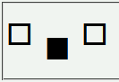
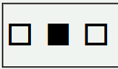

非置換インライン要素に対してline-heightプロパティを指定してもボックスの高さを設定できない。
<div style="font-size:2em; line-height:2;">□ <span style="vertical-align:text-top; line-height:2;">■</span> □</div>
span要素内の塗りつぶし四角（■）は、左右の白抜き四角（□）に比べて0.5em下がっているはずです。
N7.1での表示（標準モード）
WinIE6.0での表示（標準モード）
親要素にline-heightプロパティが明示されていても非置換インライン要素にその値は継承しません。また、例示のようにline-heightプロパティを明示してもこのバグを回避できません。
WinIE5.5、WinIE6.0互換モード、WinIE6.0標準モードで不具合の発生を確認しました。